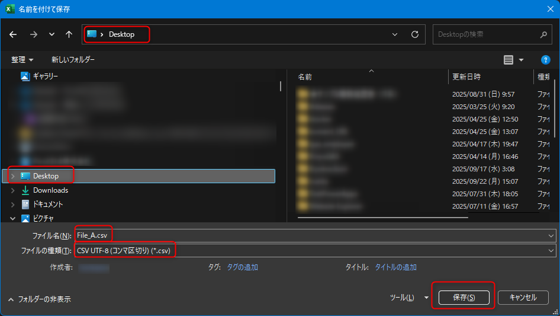
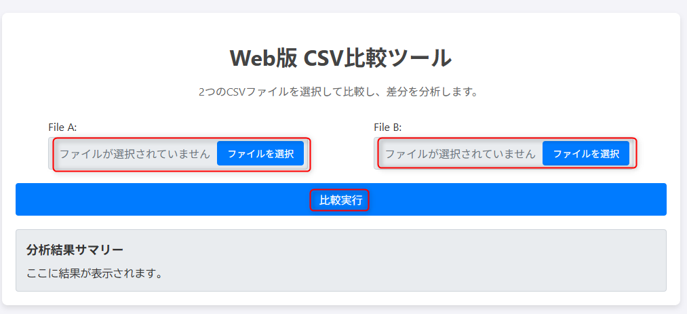
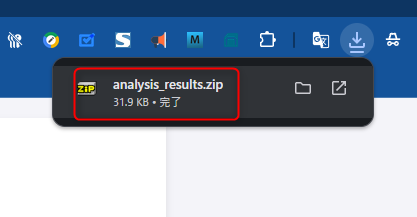

CSV Comparison Tool - User Manual
1. Introduction
This tool compares two CSV files line by line to analyze which rows have been added, deleted, or are duplicated within a file.
This manual explains the procedure for preparing "CSV files for comparison" from the original Excel files and how to operate the web tool.
2. Step 1: Preparing CSV Files for Comparison (Excel Work)
This tool assumes that each row of data is unique for comparison. However, in some cases, like the "Contract Management ID" in the original Excel file, a single column may contain duplicate data, making comparison impossible.
Therefore, you first need to combine multiple columns in Excel to create a "unique key" for comparison.
2.1. Creating a Unique Key
- Open the Excel file you want to compare (e.g., `Test-Before.xlsx`).
- In a new sheet (Sheet2), enter a header name like "Unique Key" in the first row of a column (e.g., column A).
- In the second-row cell, enter a formula to concatenate the columns you want to make unique.
- Example: To combine "Contract Management ID" from column `A` and "Amount for 2025-08" from column `AG` of Sheet1.
- Formula: `=Sheet1!A2&"+"&Sheet1!AG2`
- This formula combines `2003990` and `13125` into a single string `2003990+13125`.
- Double-click the fill handle (the small square at the bottom-right corner) of the cell with the formula to copy it down to the last row.

2.2. Saving as a CSV File
- With only the new sheet containing the "Unique Key" column visible, go to `File` > `Save As`.
- For the file type, select "CSV UTF-8 (Comma delimited) (*.csv)" and save it with a name like `File_A.csv`. 
- Repeat steps 2.1 and 2.2 for the other Excel file you want to compare (e.g., `Test-After.xlsx`) to create `File_B.csv`.
2.3. Ensure Header is on the First Line
- The tool identifies the first line as a header. Open the saved `File_A.csv` and `File_B.csv` to ensure the header is on the first line and data starts from the second line.
3. Step 2: Comparison with the Web Tool
Once you have prepared the two CSV files for comparison, you can run the comparison with the web tool.
3.1. File Selection
- Click the "Select File" button in the "File A" area and choose the `File_A.csv` you just created.
- Similarly, choose `File_B.csv` in the "File B" area. 
3.2. Executing the Comparison
After selecting both files, click the blue "Compare" button.
3.3. Checking the Results and Downloading
- Summary Display: Once the processing is complete, a summary of the analysis results will be displayed on the screen.
- ZIP Download: Simultaneously, a ZIP file (`analysis_results.zip`) containing the detailed analysis results will be automatically downloaded. 
4. Contents of the Downloaded File
The downloaded `analysis_results.zip` file contains six files. The first column of each CSV file indicates the original line number in the source file.
- `only_in_File_A.csv`: List of rows that exist only in "File A".
- `only_in_File_B.csv`: List of rows that exist only in "File B".
- `in_both.csv`: List of rows common to both files.
- `duplicates_in_File_A.csv`: List of rows that were duplicated within "File A".
- `duplicates_in_File_B.csv`: List of rows that were duplicated within "File B".
- `README.md`: A document explaining the contents of the five files above.